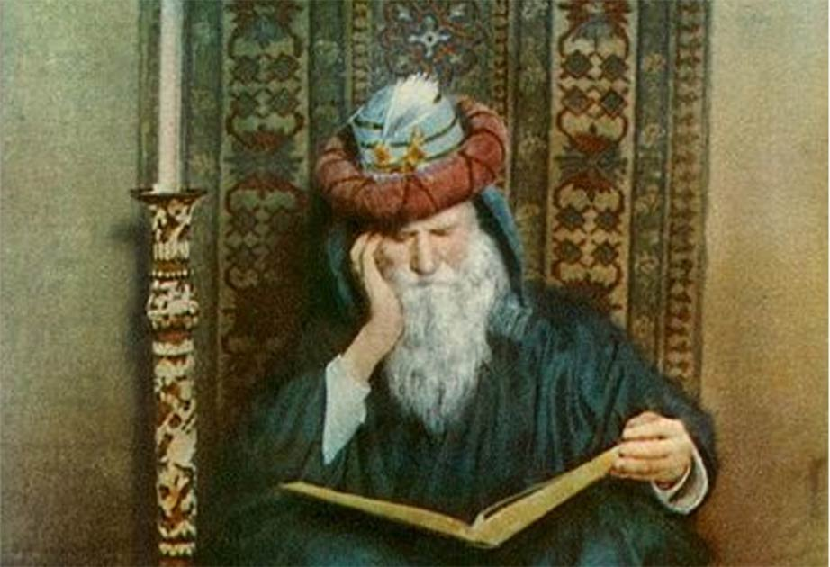
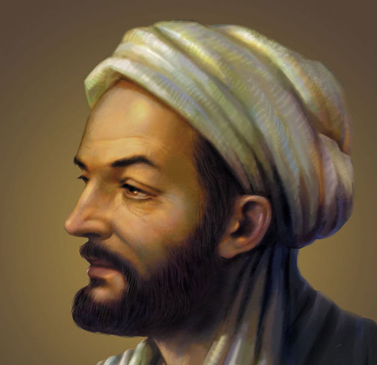

Top 5 Arabic Scientists In The Golden Age
The Islamic Golden Age was a period of scientific, economic and cultural flourishing in the history of Islam, traditionally dated from the 8th century to the 13th century.
This period is traditionally understood to have begun during the reign of the Abbasid caliph Harun al-Rashid (786 to 809) with the inauguration of the House of Wisdom, which saw scholars from all over the Muslim world flock to Baghdad, the world's largest city by then, to translate the known world's classical knowledge into Arabic and Persian. The period is traditionally said to have ended with the collapse of the Abbasid caliphate due to Mongol invasions and the Siege of Baghdad in 1258.
There are a few alternative timelines. Some scholars extend the end date of the golden age to around 1350, including the Timurid Renaissance within it, while others place the end of the Islamic Golden Age as late as the end of 15th to 16th centuries, including the rise of the Islamic gunpowder empires.
1.HASSAN IBN AL-HAITHAM, MATHEMATICIAN Basra, Iraq (965 – 1040)
Al-Haitham is considered one of the founders of modern optics. Ptolemy and Aristotle theorised that light either shone from the eye to illuminate objects or that light emanated from objects themselves. But al-Haitham suggested that light travels to the eye in rays from different points on an object.
However, al-Haitham’s stellar career ended abruptly after he foolishly promised the ruler of Cairo that he could stop the Nile from flooding by building a dam at Aswan. He couldn’t, feigning insanity to avoid persecution. Ironically, his plans to build a dam were carried out hundreds of years later, on the same site he initially proposed, when human engineering abilities had caught up with his vision.

2.OMAR KHAYYAAM, MATHEMATICIAN Neyshapur, Iran (1048 – 1131)
Khayyam calculated the length of a solar year to 10 decimal places and was only out by a fraction of a second when compared to our modern day calculations. He used this to compose a calendar considered more accurate than the Gregorian calendar that came along 500 years later.
His passion for science and interpersonal skills could classify him as one of the world’s first great science communicators – he is said to have convinced a Sufi theologist that the world turns on an axis.

3. AL-BATTANI, MATHEMATICIAN Harran, Turkey (858 – 929)
Although first conceptualised in Ancient Greece, al-Battani further developed trigonometry as an independent branch of mathematics, developing relationships such as tanø=sinø/cosø. His driving force was to obtain the ability to locate Mecca from any given geographical point – aiding in Muslim rituals such as burial and prayer, which require participants to face the holy city.

4.IBN-SINA, MEDICAL RESEARCHER Bukhara, Uzbekistan (980 – 1037)
Ibn-Sina made important contributions to the disciplines of physics, optics, philosophy and medicine. He wrote The Canon of Medicine, a text used to teach student doctors in Europe until the 1600s. He identified that the nerve cells are responsible for transmitting pain signals and his detailed observations of disease vectors, including soil, air, touch and sex, influenced the future direction of the medical profession.

5.AL-KHWARIZMI, MATHEMATICIAN Persia (780 – 850)
Can you imagine trying to multiply or divide two numbers on paper if they were written in Roman numerals? It’s thanks to al-Khwarizmi you don’t have to. He produced a comprehensive guide to the numbering system, developed from the Brahmi system in India, using only 10 digits (0-9, the so-called ‘Arabic numerals’).
Al-Khwarizmi also used the word algebra (‘al-jabr’) to describe the mathematical operations he introduced, such as balancing equations, which helped in several day-to-day problems. “The intriguing thing is that algebra developed out of a need to solve a religious problem – Islam’s complicated system of divying up inheritance,” says Masood.